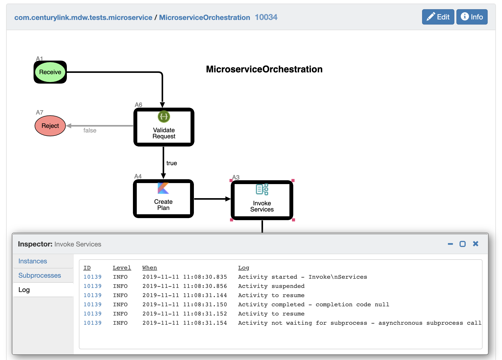

In MDW terminology, an activity represents a single step in a process flow. An activity is MDW's most granular unit of work, and usually executes within the scope of a single transaction. An activity is implemented as a Java (or Kotlin) class. In MDW parlance we refer to this class as an activity implementor. The MDW asset packages include many prebuilt, reusable activities that you can include in your flow by dragging from the Toolbox view and configuring.
You can implement your own custom activity which will also be a first-class citizen in the Toolbox view. MDW Studio
can help you create a skeletal activity implementation (right-click on a package and select New > MDW Activity). Your
activity will almost always extend
com.centurylink.mdw.workflow.activity.DefaultActivityImpl or one of its subclasses. What designates
a class as an activity is the @Activity annotation.
A general purpose activity will typically override the execute() method:
/**
* Here's where the main processing for the activity is performed.
* @return activity result (or null for default)
*/
@Override
public Object execute(ActivityRuntimeContext runtimeContext) throws ActivityException {
// TODO generated
return null;
}
execute() method should return a result code (or commonly null for default).
Attributes provide a mechanism to make your activity reusable by supporting configurable values. When a workflow
designer drags your activity onto the process canvas, they'll want to be able to enter values on the Configurator Design
tab. You can access attributes in your implementor code by calling getAttribute(). Because sometimes
you'll want to allow non-static attribute values, users can enter expressions. Here's
an example of an expression that reads a property value for EndpointURL: ${props['mdw.services.url']}/api/Users.
The configurator Design tab for an activity in MDW Studio requires instructions
on the how attributes are to be displayed and entered. This is achieved through a pagelet definition, which is
a JSON-format description of your implementor's attributes. As an example, the pagelet for MDW's Expression Evaluator
activity implementor looks like:
{"widgets": [
{
"default": "Groovy",
"label": "Language",
"name": "SCRIPT",
"options": [
"Groovy",
"javax.el",
"Kotlin Script",
"JavaScript"
],
"type": "dropdown"
},
{
"languages": "Groovy,javax.el,Kotlin Script,JavaScript",
"name": "Expression",
"type": "expression"
}
]}
Pagelet JSON can be embedded directly as an attribute of your @Activity annotation, or externalized as a
standalone asset with .pagelet extension. The Evaluator activity pagelet asset above is referenced in
ScriptEvaluator.java
like this: @Activity(value="Expression Evaluator", icon="shape:decision", pagelet="com.centurylink.mdw.base/scriptEvaluator.pagelet").
Here are the supported widget types that you can use in your pagelet:
Attributes for the @Activity annotation:
MDW supports various logging frameworks including SLF4J, SimpleLogger, Log4J, STDOUT, and others. Whichever of these loggers you choose, within your activities you can hook into special functionality that will include helpful tags in your logging output enabling you to identify runtime information regarding the source of your log lines. Here's an example log line from an activity implementor:
[p255409661.10034 a3.10139] Activity not waiting for subprocess - asynchronous subprocess call
In this log line the special tag [p255409661.10034 a3.10139] identifies the processId, processInstanceId, activityId and activityInstanceId where the logging comes from.
Important: To take advantage of this special log tagging, you'll need to write your log output through one of these ways:
logInfo(), logError(), logDebug(), etc.getLogger(). Using a logger obtained this way,
you can use the StandardLogger
methods like info(), error(), etc.Furthermore, if you use one of these recommended logging patterns within your activity implementors, your log lines will show up in MDWHub's logging views as illustrated in the following screenshots.
